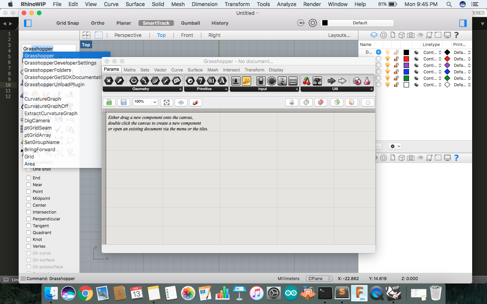
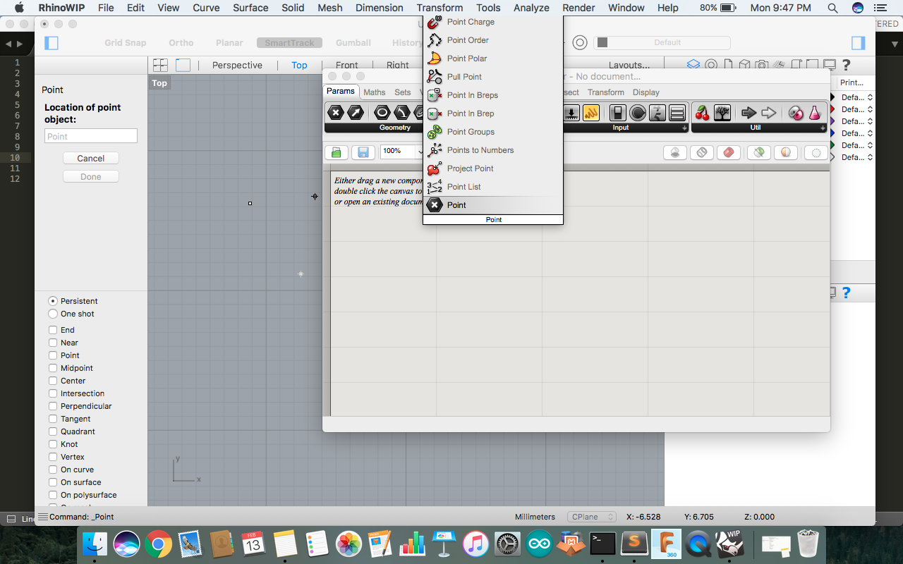
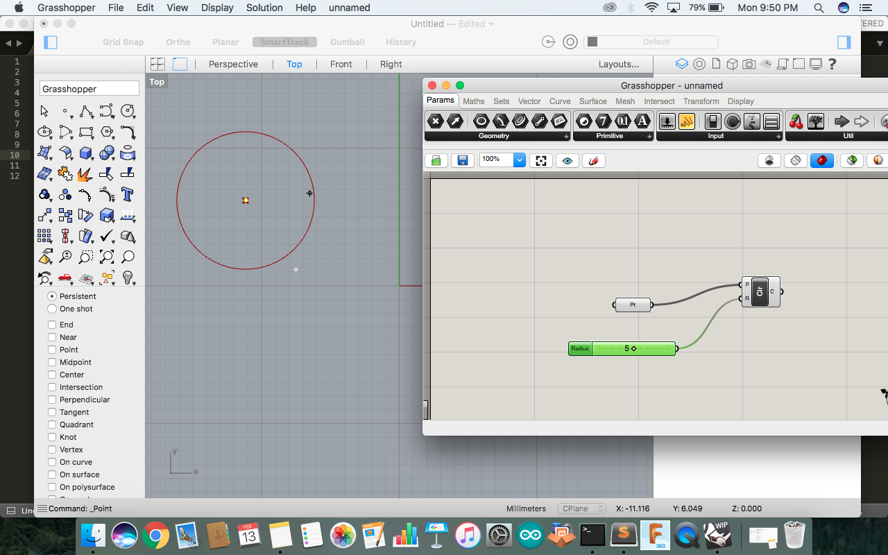

Tools Used
- Rhino ( 2D & 3d Design)
- Rhino Wip ( Parametric Design)
- Rhino Wip ( Parametric Design) | 200 mb
- Cut Studio (Vinyl Cutting)
Rhino WIP (Grasshopper)
Rhino WIP ( Grasshopper) is used for design which is having co relation setup. We can design a conenction with its value so it automatically change on refrance to other. You can go through tutorial of Rhino Grasshopper.In Mac you need to Download Rhino WIP from https://www.rhino3d.com/download/rhino-for-mac/5.0/wip You need License to run.

Taking a Point and than setting connection and commands

You can set formula and its value by connecting them to one another

Now as taking ahed you can joint to diffent values and commands with refrence and connecting them to make a final output

Different tabs and slider is available in which you can put value and start making formula.